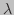
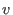

Next: Getting Started Up: Introduction Previous: New to system dynamics? Contents
As an experienced system dynamics user (or if you've just read “New to system dynamics?” ), what you need to know is what Minsky provides that other system dynamics programs don't. That boils down to one feature: The Godley Table. It enables a dynamic model of financial flows to be derived from a table that is very similar to the accountant's double-entry bookkeeping table.
The dynamics in financial flows could be modeled using the block diagram paradigm. But it would also be very, very easy to make a mistake modeling financial flows in such a system, for one simple reason: every financial flow needs to be entered at least twice in a system--once as a source, and once as a sink.
For example, if you go shopping and buy a new computer with your credit card, you increase your debt to a bank and simultaneously increase the deposit account of the retailer from whom you buy the computer. The two system states in this model--your credit card (“BuyerCredit”) and the retailer's deposit account (“SellerDeposit”)--therefore have to have the same entry (let's call this “Card”) made into them. Such a transaction would look like this:
That would work, but there's nothing in the program that warns you if you make a mistake like, for example, wiring up the BuyerCredit entry, but forgetting the SellerDeposit one:

Or, perhaps, wiring up both blocks, but giving one the wrong sign:
In a very complex model, you might make a mistake like one of the above, run the simulation and get nonsense results, and yet be unable to locate your mistake.
Minsky avoids this problem by using the paradigm that accountants developed half a millennium ago to keep financial accounts accurately: double-entry bookkeeping. Here is the same model in Minsky:
| Flows  / Stock Variables |  | Row Sum | |
| asset | liability | ||
| Initial Conditions | 0 | ||
| Buyer Accesses Credit | 0 |
This is an inherently better way to generate a dynamic model of financial flows, for at least two reasons:
If you forget to enter the recipient in this transaction, then the Row Sum identifies your mistake by showing that the row sums to “Card” rather than zero:
| Flows / Stock Variables | Row Sum | ||
| asset | liability | ||
| Initial Conditions | 0 | ||
| Buyer Accesses Credit |
And it also identifies if you give the wrong sign to one entry:
| Flows / Stock Variables | Row Sum | ||
| asset | liability | ||
| Initial Conditions | 0 | ||
| Buyer Accesses Credit |
Minsky thus adds an element to the system dynamics toolkit which is fundamental for modeling the monetary flows that are an intrinsic aspect of a market economy. Future releases will dramatically extend this capability.